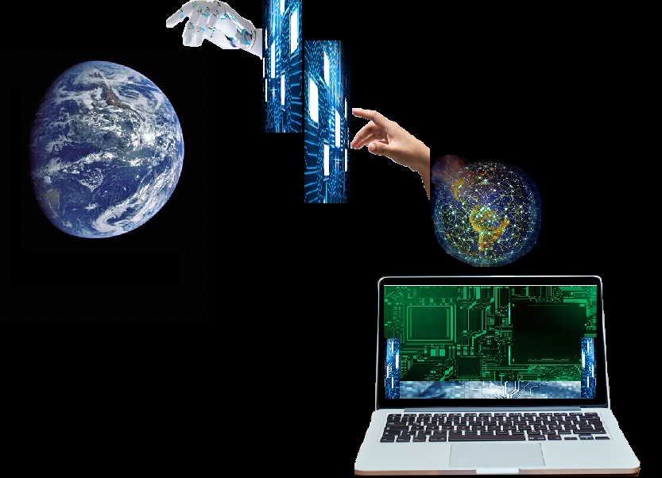
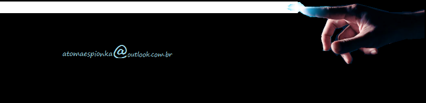

Sala alfa (Indisponível)
Acesse o link e digite a senha da sala 2 (Indisponível)
Acesse o link e digite a senha da sala 3 (Disponível)
Acesse o link e digite a senha da sala 4 (Disponível)
Acesse o link e digite a senha da sala 5 (Disponível)

Fale com o administrador, receba sua senha e acesse este link da versão 1.0.
